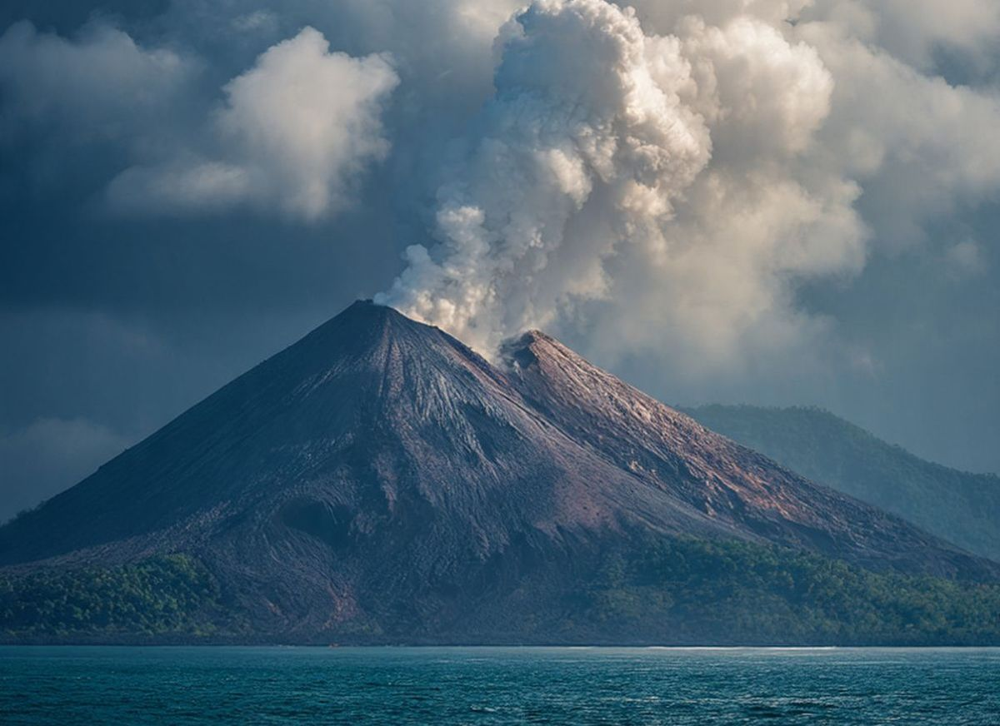

|
Website SabillyHidup seperti Larry!
|
|
|---|---|
| Beranda Tentangsaya Sekolahku Syairlagu | |
Pembelajaran Jarak JauhSenin, 7 September 2026 Karena adanya Abu Erupsi anak Gunung Krakatau, maka selama 3 hari kedepan, pembelajaran dilakukan secara jarak jauh. Pembelajaran dapat melalui Zoom, LMS, Gmeet, WhatsApp, Telegram atau media pembelajaran lainnya.  Pemerintah Kota Tangerang resmi memperpanjang pelaksanaan Pembelajaran Jarak Jauh (PJJ) bagi para peserta didik hingga Jumat, 11 September 2026. Kebijakan ini diambil sebagai tindak lanjut arahan Pemerintah Provinsi Banten untuk mengantisipasi paparan abu vulkanik Gunung Anak Krakatau yang masih melanda wilayah tersebut. Wali Kota Tangerang, Sachrudin, menegaskan bahwa perpanjangan ini merupakan bentuk tanggung jawab pemerintah dalam mengutamakan kesehatan dan keselamatan anak-anak, sekaligus memastikan kegiatan belajar mengajar tetap berjalan efektif secara daring.Selain berfokus pada keselamatan siswa di sekolah, Sachrudin mengingatkan bahwa menjaga kesehatan di tengah paparan abu vulkanik adalah tanggung jawab seluruh lapisan masyarakat. Warga yang beraktivitas di luar rumah, seperti pekerja dan pengendara, diimbau untuk tetap waspada tanpa harus panik. Pemerintah Kota Tangerang sangat menyarankan masyarakat untuk selalu menggunakan masker saat berada di luar ruangan sebagai langkah pencegahan demi melindungi diri dan mengurangi risiko gangguan kesehatan. Lebih SedikitLomba VideografiJumat, 4 September 2026 Karena adanya Abu Erupsi anak Gunung Krakatau, maka selama 3 hari kedepan, pembelajaran dilakukan secara jarak jauh. Pembelajaran dapat melalui Zoom, LMS, Gmeet, WhatsApp, Telegram atau media pembelajaran lainnya. Selengkapnya |
Tautan Eksternal |
| © Copyright Sabilly, 2026 | |